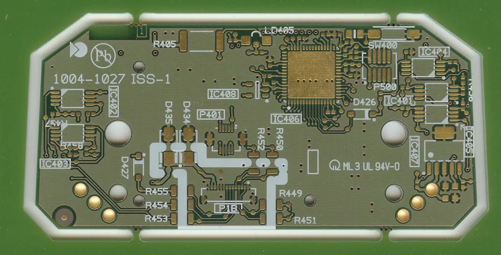
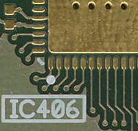
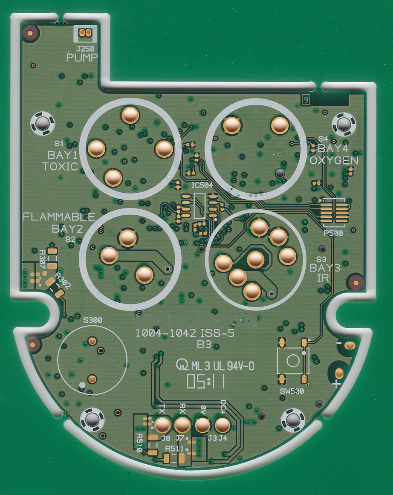
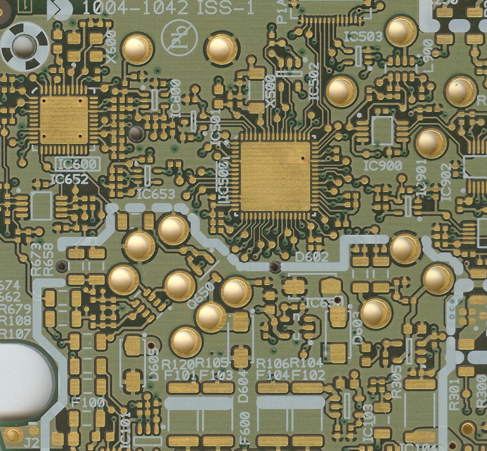
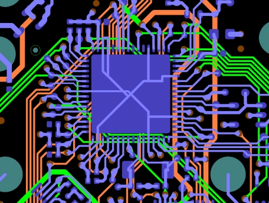
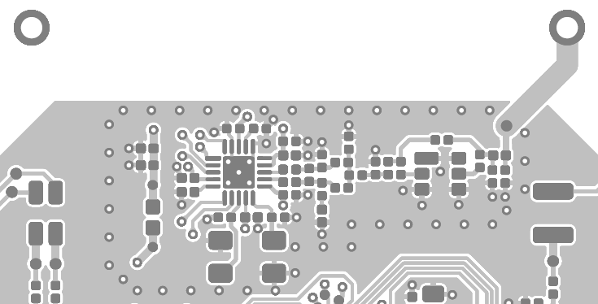
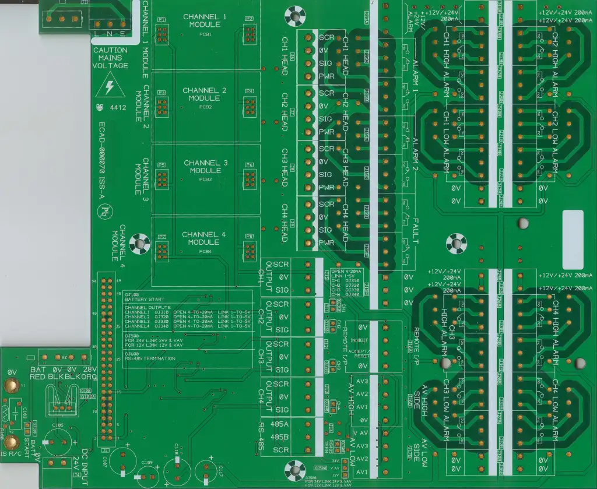
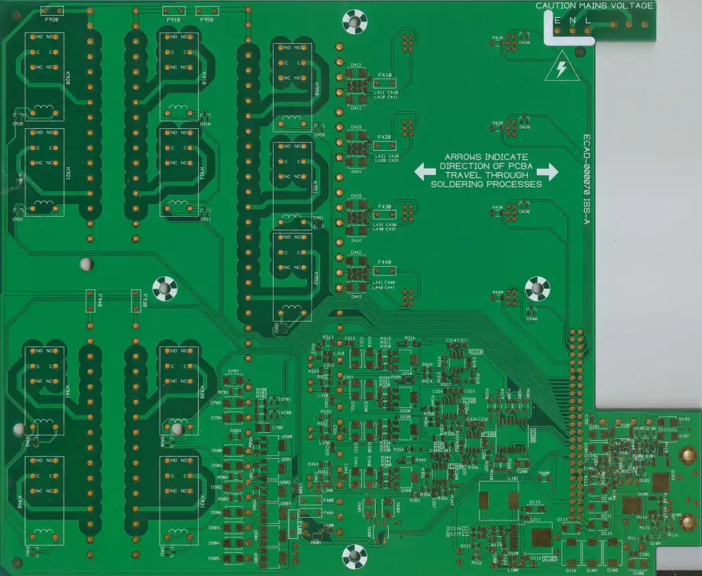
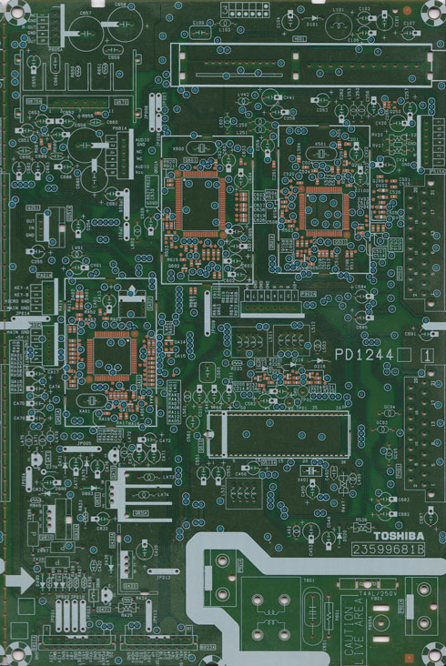
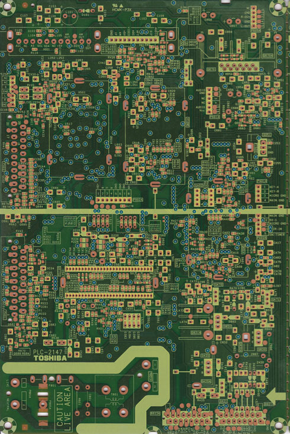

Portfolio
The examples below are of drawings, 3D models, and Printed Circuit Boards (PCBs) designed by myself whilst employed by the companies responsible for the development of the products. The boards and drawings were retained with the full written permission of the companies concerned.
Portable Gas Detector
TPortable Multi-Gas Detector with stringent segregation rules set up within the schematic and transferred over to the PCB design to meet IECEx, ATEX, and UL certification. The product was designed with close collaboration with the Mechanical Design Engineer and with the continual transfer of STEP data for the PCB Assembly from Pulsonix to Solidworks, and for the PCB profile from Solidworks to Pulsonix, throughout the design process.
Display PCB incorporating zener barrier protection circuitry with associated segregation and infallible connections to meet intrinsic safety requirements.
The display board incorporates laser-drilled micro-vias.
The main PCB has a potted enclosure on one side of the PCB to enable smaller creepage requirements between nets associated with the Lithium-Ion battery monitoring and charging circuitry, and the regulated power supply circuitry. This enables the PCB, and therefore the enclosure, to be smaller and to fit easily in the hand.
A section of the the main PCB showing two QFN microcontrollers and part of the power supply and battery charging circuitry that required stringent segregation requriements. The required creepage was determined by the Electronic Design Engineer and the Certification Body, but entered by myself into the Pulsonix schematic diagram and synchronised over to the Pulsonix PCB design.
There were a total of 102 creepage rules setup between 17 different netclasses, covering a potted area with lower creepage requirements and the exposed area of the board.
Both the display and main PCBs were designed to meet the requirements of IPC Performance Class 3. Both boards have 100% test coverage with test pads for “closed” surface-mount pin only nets.
The break-out from one of the QFN microcontrollers is shown above from the Pulsonix CAD design. Both boards were six layer designs.
R.F. Layout
An example of an R.F. application I’ve laid out for a wireless gas detection instrument.
Gas Sensor Modules
Some of the smallest PCBs I’ve designed, these Gas Sensor boards are just 35 mm by 22 mm (1.38 inches x 0.88 inches) in size.
The board below is a four layer board using metric 1608 (inch 0603) SMT passives.
The board below is a six layer board using metric 1005 (inch 0402) SMT passives.
Industrial Control Panel
The main PCB for an industrial Control Panel with four sensor inputs and a range of outputs including RS-485 and Relays capable of switching up to 240V and 5A.
This was an update of an existing design but with major modifications. The final copper thickness was increased from 35 micron (1 oz) to 70 micron (2 oz) to enable the relays to handle up to 5A whilst retaining the appropriate creepage between potentially live AC voltage tracks and other signal nets.
The power input circuitry was re-laid out with a new design to meet the EMC requirements of the Marine Equipment Directive (MED).
The board is a double-sided PTH design.
Analogue Television Signal PCB
The signal PCB for a 28 inch and 32 inch series of Analogue Cathode-Ray-Tube Television models designed by myself using Mentor Graphics SFX RE between 2000 and 2004. The board was completely laid out manually without the use of autorouting tools.
The board has 100% test coverage on all nets for MDA testing (Manufacturing Defects Analysis) in a high-volume mass-production environment.
The top component side has surface-mount component assembly by reflow, and through-hole component assembly by auto-insertion.
There are three metal shield enclosures on the PCB that use “C-cuts” to enable the enclosure to be fitted and soldered by hand after the wave solder-bath process. This enables the board to be MDA tested (Manufacturing Defects Analysis) prior to final assembly.
Eyelets are fitted to the large components used for the mains power supply in the bottom right corner prior to the surface-mount assembly. Because of this a keep-out area for surface-mount components exists in the lower section of the board. A large window in the solder stencil aperture enabled the eyelets to be fitted to the board, with the solder paste squidgee being programed to stop before reaching the eyeleted area.
The bottom component side has surface-mount assembly by glue dots for chip passive components and SOT-23 packaged transistors, and is soldered by wave-solder in a solder bath.
The signal PCB is a paper phenol, FR2, double-sided board that uses silver-plated vias. The board was designed to be fitted on an Assembly Panel of two individual PCBs to reduce assembly costs. The holes and slots are die-punched.
Analogue Television Power & Deflection PCB
The Power and Deflection PCB for an Analogue Cathode-Ray-Tube Television designed by myself using Mentor Graphics SFX between 2000 and 2004. The board was completely laid out manually without the use of an autorouter.
The AC mains circuitry is laid out on the top right of the board with regulated switch-mode power supplies in the bottom right, providing 9V and two 5V supplies.
The left half of the board is laid out with the horizontal and vertical deflection circuitry for controlling the electron beam of the Cathode-Ray-Tube (CRT).
The Line-Output-Transformer (LOPT) is sited in the top left of the board and provides the high voltage required for the CRT Anode, in the region of 30kV to 35kV for these 28 inch or 32 inch widescreen models.
There are strict creepage and clearance requirements for the different nets on this board due to the high voltages present. In addition, layout of the deflection circuitry is critical for the circuit to function. Slots help provide a lower clearance over a greater creepage requirement.